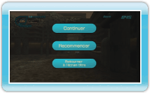

Nombre total de points obtenus en tirant sur les boîtes de conserve.
Jauge d’ENERGIE
Quantité d’énergie restante dans votre aspiro-canon. Un bloc correspond à cent unités d’énergie.
Points
Nombre de points obtenus en tirant sur une seule boîte de conserve.
Capsule d’énergie
Energie que vous pouvez aspirer et stocker dans votre aspiro-canon.
Tirs D’AFFILEE
Nombre de tirs consécutifs réussis.
Temps
Temps restant affiché lors de l’affrontement d’un boss, converti en points bonus à la fin d’un stage.
Menu de pause
Appuyez sur lors d’un stage pour afficher le menu de pause. Pointez une option et appuyez sur ou pour la sélectionner. Appuyez sur pour fermer le menu de pause et reprendre la partie.
CONTINUER
Reprendre la partie.
RECOMMENCER
Recommencer le stage en cours depuis le début, ou recommencer depuis le premier stage en mode défi.

 lors d’un stage pour afficher le menu de pause. Pointez une option et appuyez sur
lors d’un stage pour afficher le menu de pause. Pointez une option et appuyez sur  ou
ou  pour la sélectionner. Appuyez sur
pour la sélectionner. Appuyez sur